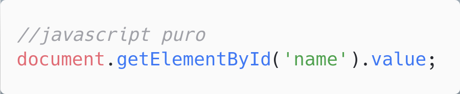
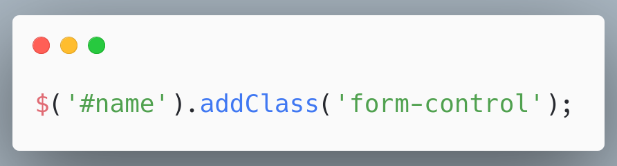
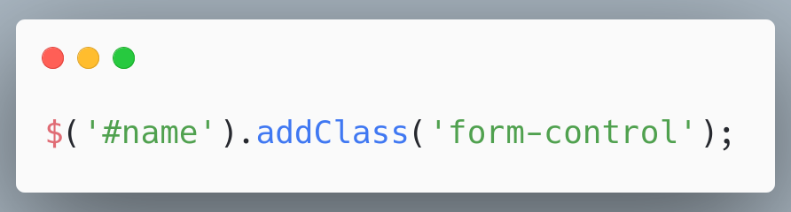
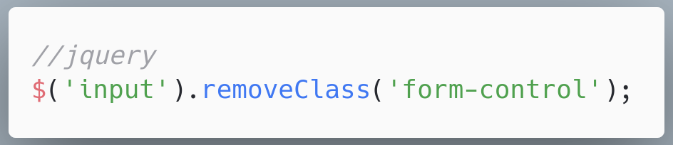
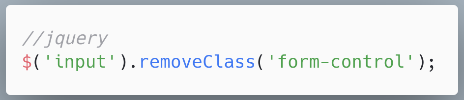
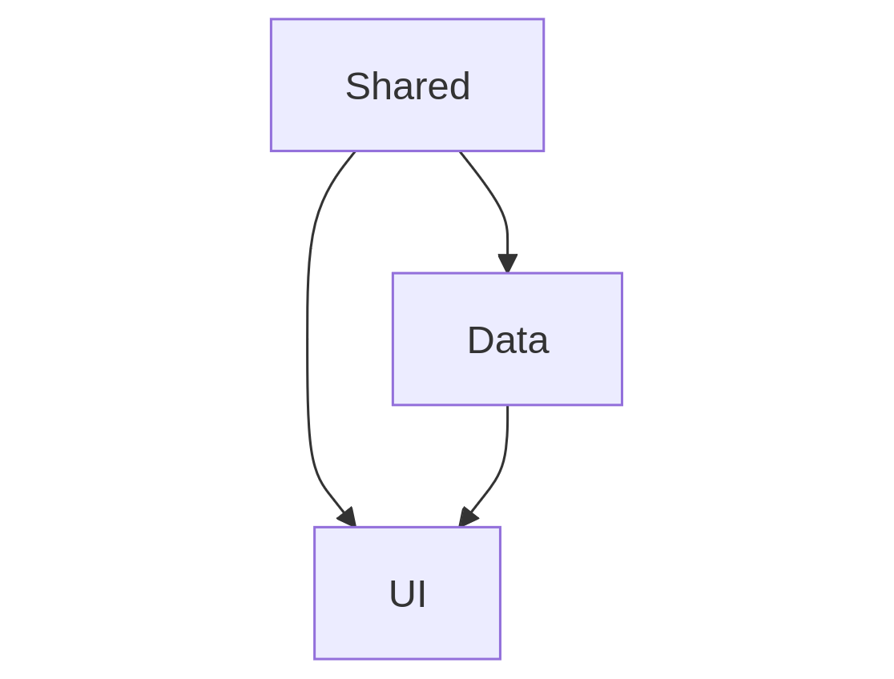

Design Patterns VS Design Principles
O que diabéisso?
Quem sou eu?
Alessandro Feitoza
- Fortaleza, Ceará
- Professor de códigos e outras computarias
- Programador/Dev/Severino
- PHP com Rapadura
- PHPeste
- SertãoDev

Agenda
- Por que isso é importante?
- Definições
- Exemplos Práticos

@alessandro_feitoza
Essa talk não é um mandamento
- É uma coletânea de devaneios que tenho baseados na academia, literatura, e conhecimento das ruas
- Só quero que você abra sua mente e seja mais crítico nas pequenas decisões
- Aproveite o que achar bom e descarte o restante
1 - Por que isso é importante?
Algumas pessoas que fazem código, acham melhor entregar rápido do que entregar bem
e sim Engenheire de Software
E que precisamos desenhar o software

Então poderiamos dizer que design de software se divide nisso?

O melhor seria isso
2 - DEFINIÇÕES
Patterns
Soluções "gerais" repetitiveis, para resolverem problemas comuns.
Cristopher Alexander, 1977

Um padrão descreve uma solução comprovada para um problema recorrente no design
Gang of Four, 1994

Cataloga e explica padrões comuns para resolver problemas de software orientado a objetos.
E como ninguém conhece esse livro?
Exemplos conhecidos
- Composite
- Observer
- Builder
Principles
Porque comparar os 2? Se são diferentes dos iguais
APLICABILIDADE
CONCEITO
| Principles | Guias para tomar decisões de design. |
|---|---|
| Patterns | Soluções prontas para problemas recorrentes. |
Abordagem
| Principles | Guias para tomar decisões de design. |
|---|---|
| Patterns | Soluções prontas para problemas recorrentes. |
Flexibilidade
| Principles | Guias para tomar decisões de design. |
|---|---|
| Patterns | Soluções prontas para problemas recorrentes. |
Mas a culpa não é da nova geração!
"Ain, mas na minha época a gente tinha que se virar"
A gente da velha guarda se virou tanto que saiu rebolando JQuery em tudo que era lugar
Mas é preciso entender o contexto Pra criticar de cumforça
Acessar um valor

Add uma classe: JS x JQuery
 

Remover uma classe de varios inputs: JS x JQuery
 

Ah Feitozo,
então o JQuery era bom
Javascript puro: 12 137 211 ops/sec
üíÄ o Finado JQuery: 350 557 ops/sec
Há um üêò elefante
na Sala
Quase todo projeto começa bonito
e termina feio

Antes de falar de Componentes, é preciso entender o que significa isso
Componente
o que compõe ou ajuda na composição de algo;
o que é parte constituinte de um sistema maior;

Por falar em pedreiro, bora botar a mão na massa

e o REACT?


Composite Pattern
Comece pelo começo
A página é composta por componentes
E dentro da página?
- Data: Consultas, DataTransformer, em geral os dados que serão usados pela aplicação
- Shared: Camada independente, hooks, utilitários, coisas que serão "compartilhadas" entre os componentes em si
- UI: Interfaces do Usuário, depende da camada de Data e Shared
06 passos
para dar o primeiro passo
1 - No fim tudo é
HTML, CSS e Javascript
2 - Lei de Pareto
3 - Não existe
bala de prata
4 - Teoria das
Janelas Quebradas
5 - Faça uma
Sopa de Pedras
6 - Arquitetura não é sobre pastas
É sobre intenção
E é isso
Como dizia minha ex:
Temos que terminar
DÚVIDAS?
Referências
@alessandro_feitoza
https://linkedin.com/in/AlessandroFeitoza
slides.feitoza.tec.br